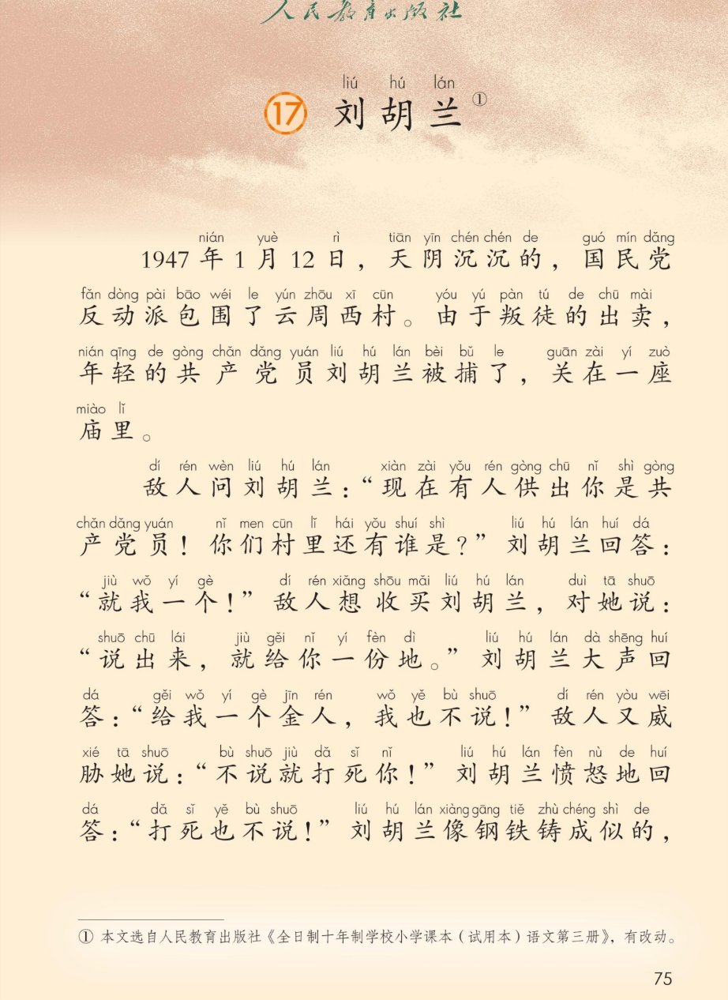
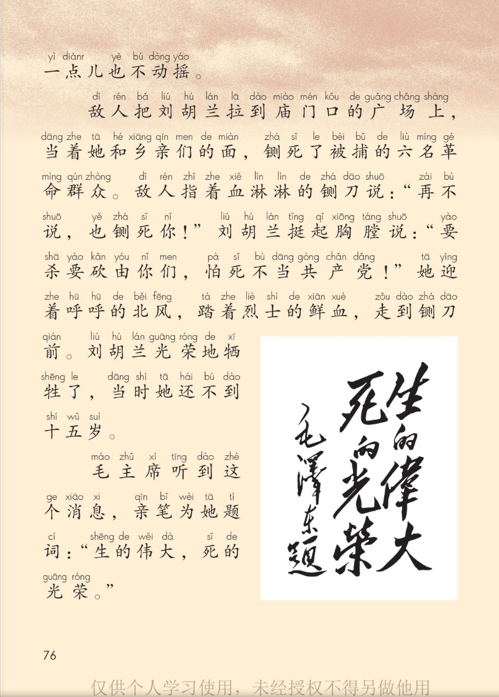
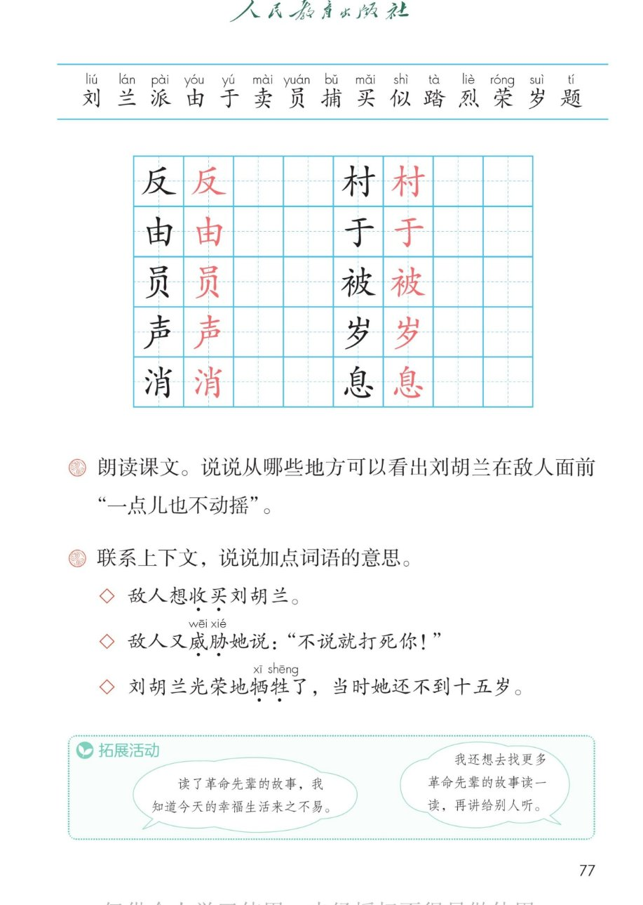

×
🔊 手机听不到声音怎么办？
① 先把手机
媒体音量调大 ，确认没开静音、没连蓝牙耳机；在微信里打开的，点右上角「⋯ → 用浏览器打开」。
② 还是没声音？到应用商店免费下载
Microsoft Edge 浏览器 （它自带朗读发声），用它打开本页面就能出声。
③ 换了 Edge 仍然没声音，说明这部手机的
硬件/系统不支持 网页朗读（多为老旧机型）；近几年买的新手机一般都能正常播放。
→ 打开声音自检
🕊 第 17 课《刘胡兰》· 有声图文带读
统编版语文 · 第六单元·阅读 · 课本 第 75~77 页 · 本文选自人民教育出版社《全日制十年制学校小学课本（试用本）语文第三册》，有改动
课文 4 个自然段
会认字 15
会写字 10
听写词 10
近义词 4 组
深入理解 8 题
本课本领 分角色朗读
🎧 五步学（可随时点任意一句、一个字、一个词单独听）： ① 听读课文 ——一句一句读，读到哪一句哪一句发光；开「跟读」后读完一句留时间让你自己读。② 学字词 ——15 个会认字、10 个会写字（含书写提示），点一个读一个。③ 词语·听写·造句 ——先听课后要求理解的三个词，再听写 10 个词（读两遍→你写→报答案→听示范句），最后听 4 组近义词辨析。④ 深入理解 ——8 道题（认知 / 理解 / 运用 / 拓展），开放题答案不唯一，先想后看。⑤ 讲故事·分角色 ——先按顺序讲刘胡兰的故事，再分角色朗读课文。
点段前的 ①②③ 听整段
🔁 跟读模式：关
👁 隐藏注音（自测用）
注音只标本课要认、要写的字，读音来自课本第 3 页生字表
🎤 朗读要求（老师标准） 不添字、不漏字、不回读 ；句号停得长一点 ；凶狠、吓唬人 的语气（声音压低一点）；响亮、坚定 ，一句也不软；最慢、最重 ，一个字一个字读清楚。
① 1947年1月12日，天阴沉沉的，国民党反fǎn 动派pài 包围了云周西村cūn 。 由yóu 于yú 叛徒的出卖mài ，年轻的共产党员yuán 刘liú 胡兰lán 被捕bǔ 了，关在一座庙里。
② 敌人问刘liú 胡兰lán ：“现在有人供出你是共产党员yuán ！你们村里还有谁是？” 刘liú 胡兰lán 回答：“就我一个！”敌人想收买mǎi 刘liú 胡兰lán ，对她说：“说出来，就给你一份地。” 刘liú 胡兰lán 大声shēng 回答：“给我一个金人，我也不说！”敌人又威胁她说：“不说就打死你！” 刘liú 胡兰lán 愤怒地回答：“打死也不说！”刘liú 胡兰lán 像钢铁铸成似shì 的，一点儿也不动摇。
③ 敌人把刘liú 胡兰lán 拉到庙门口的广场上，当着她和乡亲们的面，铡死了被捕bǔ 的六名革命群众。 敌人指着血淋淋的铡刀说：“再不说，也铡死你！” 刘liú 胡兰lán 挺起胸膛说：“要杀要砍由yóu 你们，怕死不当共产党！”她迎着呼呼的北风，踏tà 着烈liè 士的鲜血，走到铡刀前。 刘liú 胡兰lán 光荣róng 地牺牲了，当时她还不到十五岁suì 。
④ 毛主席听到这个消xiāo 息xī ，亲笔为她题tí 词：“生的伟大，死的光荣róng 。”
🤔 想一想（点我可跳过）
点一张图，听读整页

第 1 张 · 第 75 页 · 课题与课文前两段

第 2 张 · 第 76 页 · 刘胡兰牺牲与毛主席题词

第 3 张 · 第 77 页 · 生字表与课后题
📖 人教版《语文》二年级上册 · 课本第 75~77 页 · 图片仅供个人学习，版权归人民教育出版社所有
点一个字，听读音、词语和课文里的句子
结构、部首、笔画与书写提示为通用规范，供参考，以教材和老师的指导为准
反
fǎn
反动 · 反对
4 画 · 半包围（厂）
第一笔撇要平，竖撇立住，横撇和捺要舒展，最后一捺写稳
村
cūn
村子 · 农村
7 画 · 左右（木）
木字旁要写窄，最后一笔捺改成点；右边的寸横要长、竖钩要直
由
yóu
由于 · 自由
5 画 · 独体（丨）
上边的竖要向上出头，中间的竖写在竖中线上，最后一横要平要长
于
yú
由于 · 于是
3 画 · 独体（一）
两横长短不同，第二横长一些，竖钩要直，写在竖中线上
员
yuán
队员 · 员工
7 画 · 上下（口）
上面的口要写小，下面的贝要宽一点，最后两笔撇和点要分开
被
bèi
被捕 · 被子
10 画 · 左右（衤）
衣字旁是两点，不要写成一点；皮的横钩要平，最后一捺要舒展
声
shēng
大声 · 声音
7 画 · 上下（士）
上面是士不是土，上横长、下横短；下面写得宽一些，最后一撇伸出去
岁
suì
岁月 · 年岁
6 画 · 上下（山）
上面的山要写扁，中竖在竖中线上；下面的夕撇要长，最后一点不要丢
消
xiāo
消息 · 消灭
10 画 · 左右（氵）
三点水排成弧形，第一点偏右；右边的肖上面是小字头，下面的月要窄
息
xī
消息 · 休息
10 画 · 上下（心）
上面的自要写窄，里面两横不写满；下面心字底要宽，三点分开
点一行，听这个词在课文里的意思
收买 敌人想收买 刘胡兰。意思：用好处拉拢人，让别人替自己办事。
威胁 敌人又威胁 她说：“不说就打死你！”意思：用狠话吓唬人，逼别人答应。
牺牲 刘胡兰光荣地牺牲 了。意思：为了正义的事业献出生命。
读两遍 → 你在纸上写 → 报答案 → 听示范句
准备听写 · 共 10 个词
○ ○ ○
点下面的「开始听写」，听到一个词就写一个词。
▶ 开始听写
🔁 再读一遍
👁 看答案
点词听读，点句子听示范句，再自己说一句
1 反动 会写字
示范句：国民党反动派包围了云周西村。
✏️ 我也能说：反 + 什么
2 村子 会写字
示范句：云周西村是一个小村子。
✏️ 我也能说：我的村子 + 怎么样
3 由于 会写字
示范句：由于叛徒的出卖，刘胡兰被捕了。
✏️ 我也能说：由于 + 原因，结果
4 队员 会写字
示范句：我是少先队的一名队员。
✏️ 我也能说：谁 + 是 + 什么队员
5 被捕 会写字
示范句：刘胡兰被捕了，关在一座庙里。
✏️ 我也能说：谁 + 被捕了
6 大声 会写字
示范句：刘胡兰大声回答，给我一个金人，我也不说。
✏️ 我也能说：谁 + 大声 + 做什么
7 岁月 会写字
示范句：我们永远记得那些艰苦的岁月。
✏️ 我也能说：怎样的岁月
8 消息 会写字
示范句：毛主席听到这个消息，亲笔为她题词。
✏️ 我也能说：谁 + 听到 + 什么消息
9 反对 会写字
示范句：我们都反对浪费粮食。
✏️ 我也能说：谁 + 反对 + 什么
10 声音 会写字
示范句：刘胡兰的声音又响又亮。
✏️ 我也能说：谁的声音 + 怎么样
相同点 / 不一样在哪 / 各造一句
愤怒 — 气愤
相同：都表示非常生气 。
不一样：愤怒 的气更大、更重，多用在文章里；气愤 轻一点，平时说话常用。
愤怒：刘胡兰愤怒地回答，打死也不说。
大声 — 高声
相同：都是声音很响 。
不一样：大声 只说嗓门大，好懂好用；高声 多指把嗓子提起来，更书面一些。
大声：刘胡兰大声回答，给我一个金人，我也不说。
光荣 — 荣耀
相同：都是光彩、值得骄傲 。
不一样：光荣 多指做了好事、为别人出力得到的光彩；荣耀 更隆重，多用在很大的成就上。
光荣：刘胡兰光荣地牺牲了。
消息 — 信息
相同：都是传来的情况 。
不一样：消息 平时说话最常用，可新可旧；信息 更书面，还常指手机、电脑里的内容。
消息：毛主席听到这个消息，亲笔为她题词。
一个卖字，两种坏事 收买 出卖 买卖
写英雄的样子 挺起胸膛 愤怒地回答 一点儿也不动摇 像钢铁铸成似的
把时间数目写清楚 一九四七年一月十二日 六名革命群众 十五岁
标「答案不唯一」的题，说得有道理都对
认知 这个故事发生在哪一年？哪一天？在什么地方？看解析
🤔 想一想
解析：
时间 ：一九四七年一月十二日。
地点 ：云周西村。事情 ：国民党反动派包围了村子，刘胡兰被捕。
💡 读故事先找出时间、地点、人物，故事就清楚了
认知 敌人一共用了哪几种办法对付刘胡兰？看解析
🤔 想一想
解析：
逼问 ：现在有人供出你是共产党员，你们村里还有谁是？
收买 ：说出来，就给你一份地。
威胁 ：不说就打死你！再不说，也铡死你！
💡 三种办法一次比一次狠，刘胡兰的回答却一次也没软
理解 从哪些地方可以看出刘胡兰在敌人面前“一点儿也不动摇”？看解析
🤔 想一想
解析：
回答敌人 ：就我一个！给我一个金人，我也不说！打死也不说！
面对铡刀 ：她挺起胸膛说，要杀要砍由你们，怕死不当共产党！
课文总结 ：刘胡兰像钢铁铸成似的，一点儿也不动摇。
💡 一句一句找，找出三处就说得很好
🌈 找的地方越多，说得越全，答案不唯一
理解 “收买”是什么意思？敌人想用一份地换什么？看解析
🤔 想一想
解析：
收买 ：用好处拉拢人，让替自己办事。
敌人想换的 ：换她说出村里还有谁是共产党员。
刘胡兰的回答 ：给我一个金人，我也不说！
💡 好处一次比一次大，她还是不答应，因为她知道出卖同志比死还可怕
理解 “威胁”是什么意思？找出敌人威胁刘胡兰的两句话。看解析
🤔 想一想
解析：
第一句：不说就打死你！
第二句：再不说，也铡死你！
💡 敌人先当众铡死六名群众给她看，再说这句狠话，手段一次比一次狠
运用 “牺牲”是什么意思？为什么说刘胡兰光荣地牺牲了？看解析
🤔 想一想
解析：
牺牲 ：为了正义的事业献出生命。
为什么光荣 ：她护住了同志，护住了乡亲，什么也没说。
所以毛主席给她题词：生的伟大，死的光荣。
💡 说她光荣，不是因为她死了，是因为她为什么而死
🌈 答案不唯一，说清为谁、为什么，就说得很好
运用 毛主席为什么给刘胡兰题词“生的伟大，死的光荣”？看解析
🤔 想一想
解析：
生的伟大 ：她年纪小就参加革命，一心为老百姓办事。
死的光荣 ：她宁死不说，护住了同志和乡亲。
💡 八个字，一半说她怎样活，一半说她怎样死
拓展 读了刘胡兰的故事，你想说些什么？看解析
🤔 想一想
解析：
对刘胡兰说 ：你真勇敢，我记住你了。
对自己说 ：今天的幸福生活来之不易，我要好好珍惜。
还想做 ：去找更多革命先辈的故事读一读，再讲给别人听。
🌈 答案不唯一，说清想对谁说、说什么就好
点一张卡，听这一步怎么说
💬 讲故事支架：先 说被捕 → 再 说敌人怎样逼问、刘胡兰怎样回答 → 接着 说敌人收买和威胁 → 最后 说她牺牲了，毛主席为她题词。
点一个角色，听他（她）说的话；四人合起来，课文 15 句一句不漏
📖 旁白
“一九四七年一月十二日，天阴沉沉的……”
💬 语气：要读得清楚、平稳 ，像在讲一件真事；讲到最后一句要放慢、放低
👤 敌人
“现在有人供出你是共产党员！你们村里还有谁是？”
💬 语气：要读出凶狠、吓唬人 的语气，声音压低，一句比一句狠
🌺 刘胡兰
“就我一个！”
💬 语气：要读得响亮、坚定 ，一句也不软；最后一句把胸膛挺起来读
✍️ 毛主席
“生的伟大，死的光荣。”
💬 语气：要读得最慢、最重 ，一个字一个字读清楚，像在题词